AgentDome Review: AI Cost Analysis and Optimization
In AgentDome, I can follow an AI cost to the employee, agent, tool and model behind it. From there, I can open an optimization recommendation and inspect the proposed change.
For this review, I worked through the FinOps interface and checked existing cache-configuration packages in my Intune demo tenant. I wanted to see how the recommendation, endpoint change and later usage report fit together.
Disclosure: I am a member of AgentDomeâs advisory board. Its screenshots use staging data, including identities, amounts, dates and evaluations. They are not customer results or an independent savings benchmark. The Intune screenshots show existing demo-tenant packages; I did not deploy a new policy or run a remediation for this review.
I checked the interface and the two available public product articles on 20 October 2026. The pilot steps below are recommendations, not a report of a completed rollout.
What AgentDome does
The interface covers cost attribution, recommendations and policies:
| Work | What the product shows | What a team can do with it |
|---|---|---|
| Attribute consumption | Tools, models, people, agents, departments and projects | Find an owner for a cost instead of stopping at a provider invoice |
| Identify a change | Model, context, tool and caching recommendations | Review a specific configuration decision |
| Apply and review | Automation targets, MDM integration and reporting | Roll out a scoped change and compare subsequent results |
AgentDome describes a collector in the customerâs environment, with connectors to the AI platforms. According to its security article, sensitive content is processed locally and required metadata goes to the central platform. Ask which fields are included, particularly if you plan to collect prompts or responses. Deployment model · Security architecture
The implementation depends on the workload. Intune can distribute supported settings to a local coding client. Changing a model deployment in Microsoft Foundry or an AWS agent runtime belongs with that workloadâs owner.
Follow the cost to a person or an agent
I started in Dashboard â General. The page separates total consumption, potential savings, spend by tool, organizational attribution and reported realized savings.
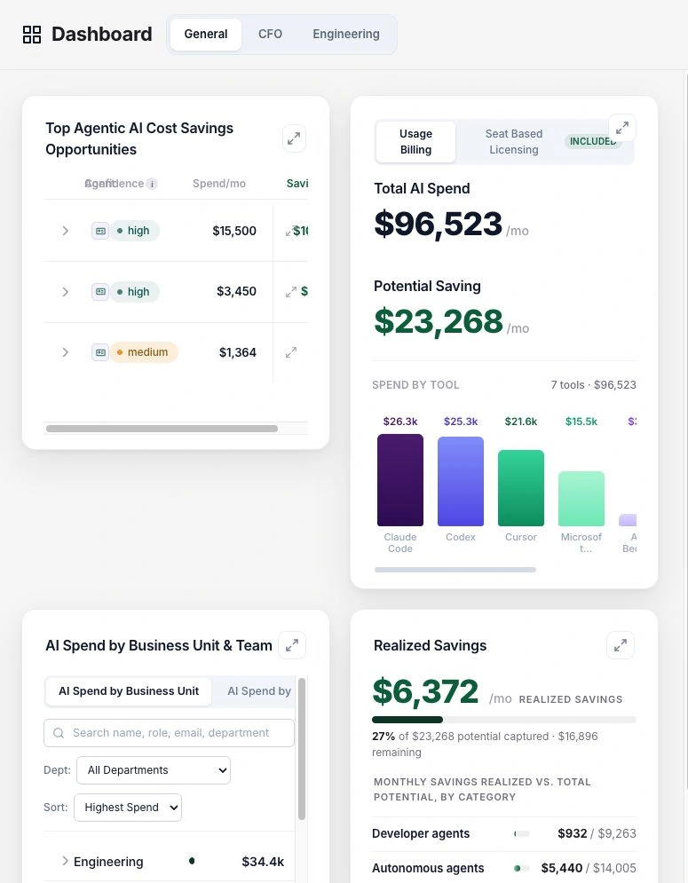
The tool breakdown includes Claude Code, Codex, Cursor, Microsoft Foundry, AWS Bedrock and Copilot Cowork. There is also an unattributed bucket. I would keep that visible: assigning unknown spend to a department without evidence creates a tidy chart and unreliable chargeback.
A team lead can filter by department, search for a person or switch between business units and the manager hierarchy. The mapping depends on maintained identity data. Shared credentials and missing owners still need to be resolved.
People and service principals need different ownership
The example Motor Loans Processing Agent has a service-principal identity and Microsoft Foundry consumption. Its card links to model rightsizing, unused MCP servers and deferred tool loading. You can move from an agentâs total to the recommendation that explains it.
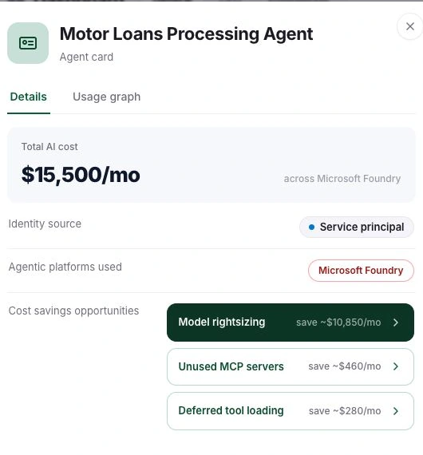
The employee card shows the same information for a person. The demo employee is mapped through Okta and uses both Cursor and Claude Code. Review those costs together before deciding which tool or setting to change.
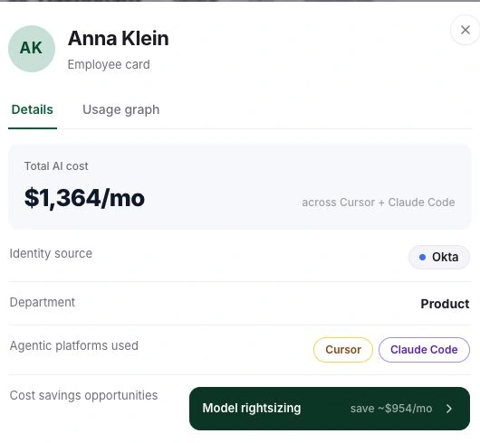
Record a technical owner and a budget owner. A service principal alone does not tell Finance who can approve a model change or explain an unusual run.
Use the graph to inspect the path
Cost Graph, marked beta, expands from people or autonomous agents to tools, platforms and models. Nodes can be expanded, collapsed and moved. Here I followed the demo agent through Microsoft Foundry to its model.
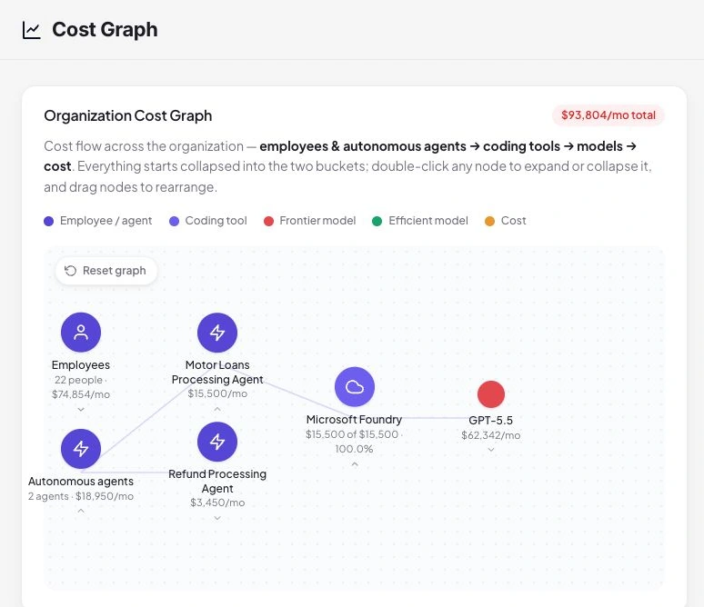
A model node may combine several incoming paths. Check those connections before comparing its total with one agentâs cost, and record the period and workload alongside the screenshot.
Finance and engineering get different views
The CFO tab shows forecasts, budget variance, business-unit ROI and vendor commitment utilization. A lower bill can still leave an annual commitment underused. A higher bill might accompany more completed work.
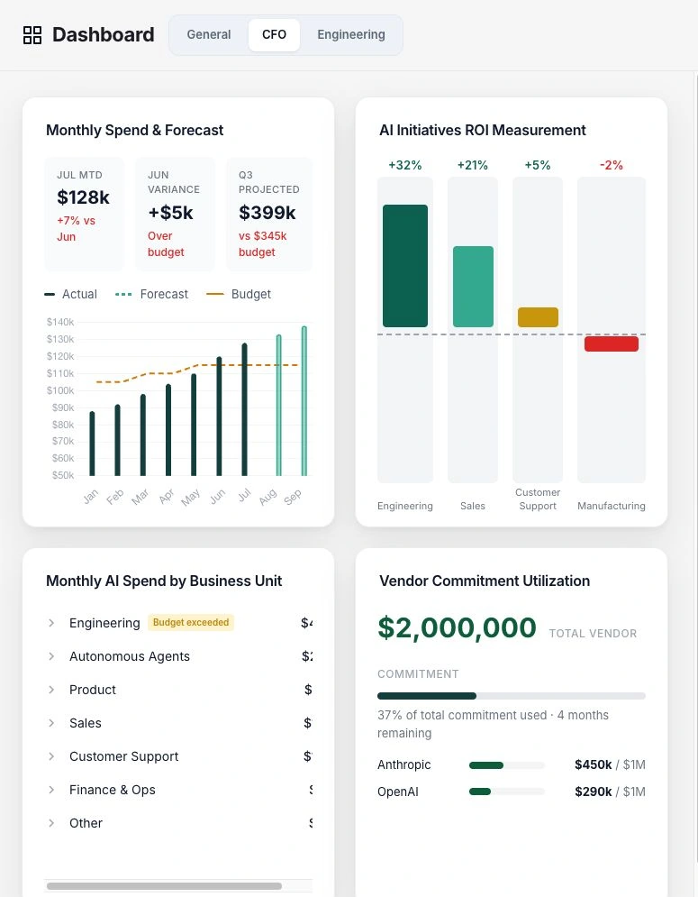
The Engineering tab shows project costs and budget goals together. I also found budget controls, which I left unchanged. Before using its ROI figures or forecasts for a decision, agree how the baseline is calculated.
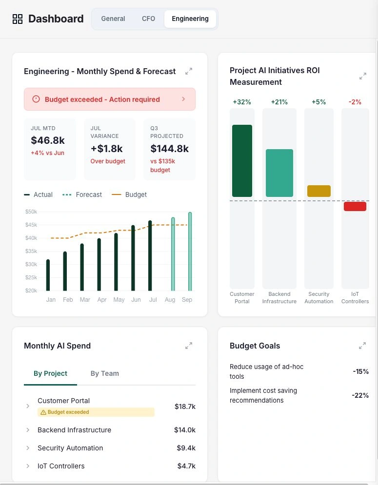
Seat Based Licensing is separate from Usage Billing. The demo shows activity in Copilot Outlook, Teams, Office and Loop alongside licensed users. The displayed zero additional usage cost must not be read as a zero license price. Fixed subscriptions and metered consumption belong in separate lines of the cost model.
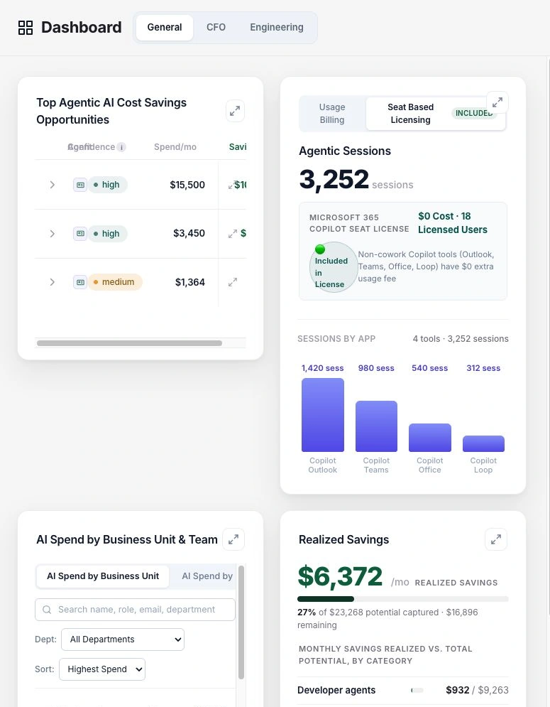
Six kinds of savings recommendation
Saving Opportunities groups findings by the proposed change. Open a recommendation to see the affected workload, its reasoning and the estimated saving.
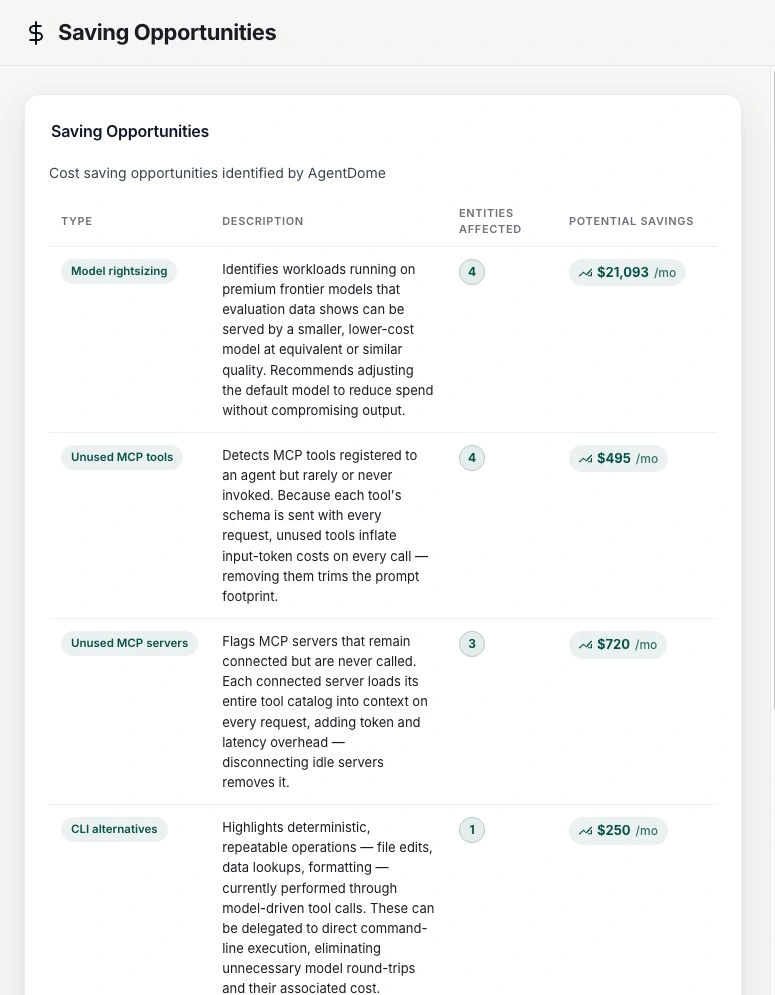
| Category in the interface | Proposed change | What I would verify |
|---|---|---|
| Model rightsizing | Use a less expensive model for a suitable workload | Completion, correctness, latency and retries on representative tasks |
| Unused MCP tools | Remove unneeded tool definitions | Whether those definitions are sent and whether rare workflows still need them |
| Unused MCP servers | Disable unused connections | Ownership, exceptional use and a quick way to restore them |
| CLI alternatives | Use a suitable CLI for a repeatable operation | Permissions, output, errors and functional equivalence |
| Deferred tool loading | Load definitions when required | Client support, discovery success and actual context reduction |
| Prompt caching | Reuse a repeated prefix under suitable cache settings | Reuse intervals, cache writes, cache reads and total cost |
Review these changes separately. Changing a default model or clearing a session can affect the answer or remove context the user still needs. An approval to remove an unused connection should not automatically cover either change.
Read the evaluation behind a model recommendation
The rightsizing example proposes a cheaper model for the Motor Loans agent. The Reasoning tab includes a Microsoft Foundry evaluation target and a comparison table.
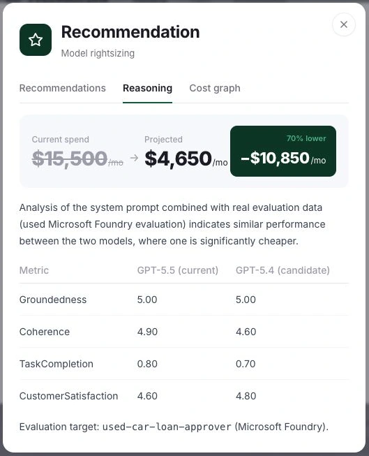
I read the evaluation before judging the price difference. Groundedness is equal in the demo, but task completion drops from 0.80 to 0.70, coherence drops from 4.90 to 4.60, and customer satisfaction rises. Calling the performance similar is not enough to approve the switch.
For a loan-processing workflow, the owner needs to define acceptable error rates and cases that require review before switching. Include retries in the cost comparison. The model names and dollar amounts here are staging examples, not current model-price advice.
The Cost graph tab lets you compare the current and optimized scenario. Switching that view changes the visualization; it is not evidence that the Foundry deployment has changed. For a separate guide to evaluating agent changes, see tracing and evaluation in Microsoft Foundry.
Some findings belong to the runtime owner
The caching detail for the Refund Processing Agent describes repeated context in an AWS workload. Its proposed implementation involves the runtime, rather than a laptop configuration.
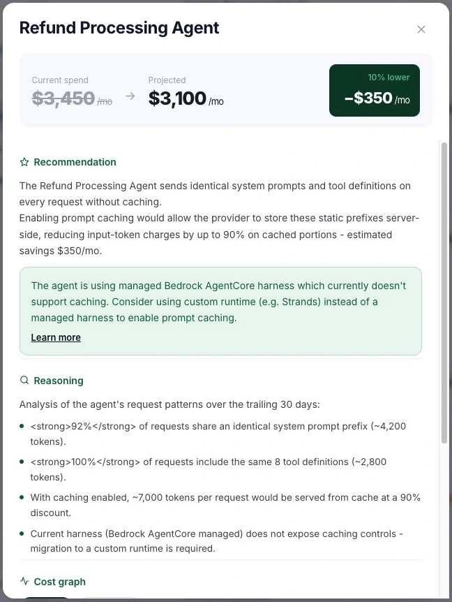
Intune can distribute settings to managed endpoints. This hosted agent needs a change in its own runtime, so its owner must confirm the supported controls and apply them there.
Saving Automation turns a recommendation into a targeted policy
The Coding Agents tab contains seven policy types. Each row includes an enabled state, expected savings, developer-experience impact, a target and an Enforce or Inform action.
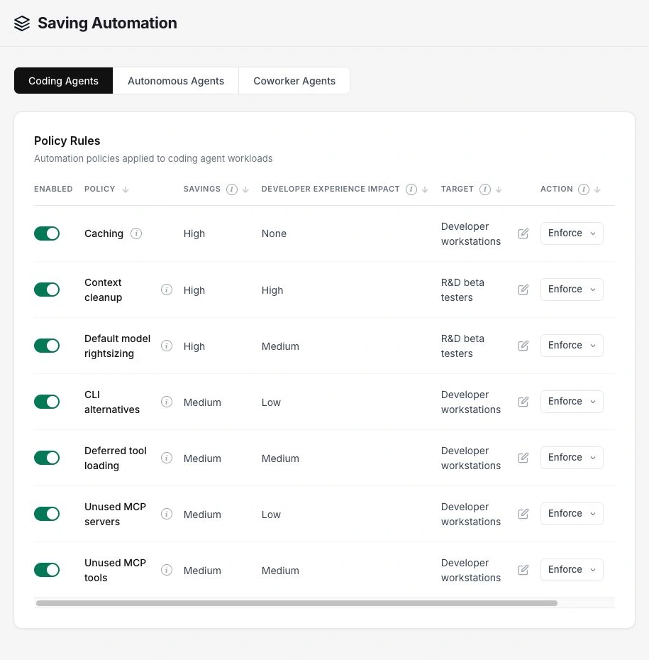
The policies cover caching, context cleanup, default-model rightsizing, CLI alternatives, deferred tool loading, unused MCP servers and unused MCP tools. The example rates context cleanup as having a high impact on developer experience and default-model rightsizing as medium. Check those ratings with the affected developers.
The interface describes Inform as notifying developers through email, Teams or Slack, while Enforce applies the policy. For changes that affect ongoing work, my starting point would be Inform, followed by a reviewed policy in a test group.
For default-model rightsizing, a developer can choose another model for an individual session. New sessions return to the recommended default, according to the policy description. Keep those overrides and their cost visible to the owner.
Target the existing management groups
Opening the caching ruleâs target picker exposes MDM â Microsoft Intune, MDM â Jamf Pro and Custom tabs. The Intune tab lists groups and membership counts; the demo selects Developer workstations.
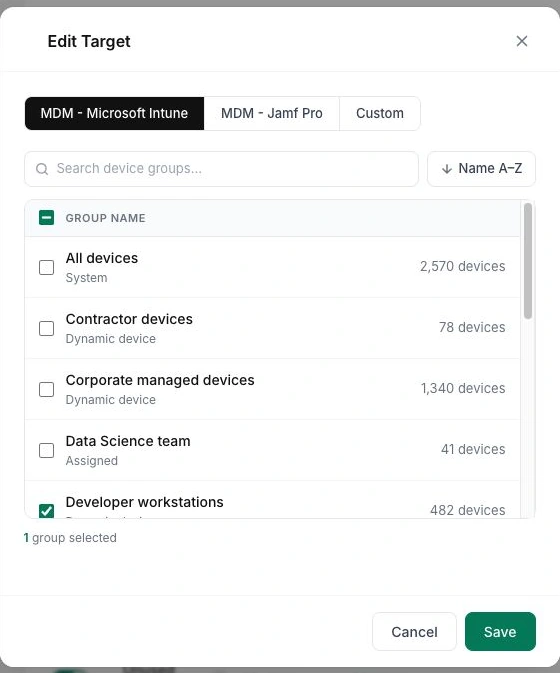
Jamf Pro has its own group list; I did not test a macOS deployment. The Custom tab mentions tagging and developer-assignment expressions, but I could not inspect a complete configuration for that option.
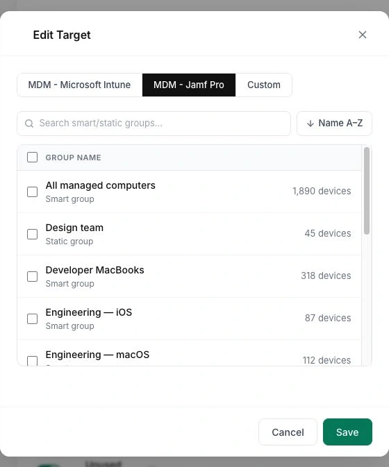
The Autonomous Agents and Coworker Agents tabs had no active policies in this tenant, so there was no configured example to inspect for those workloads.
The Intune connection, with an existing script package
For a managed coding client, the steps are to identify a costly pattern, choose a supported setting, deploy it to a group and check the result. Use the later usage report to compare consumption for similar work.
AgentDomeâs MDM article describes this approach for prompt-cache settings. It uses existing device management to distribute client configuration rather than installing a separate AgentDome endpoint agent. Existing MDM components and the client configuration still have to be present.
In my Modern Device Management demo tenant, I found two existing packages under Devices â Scripts and remediations:
Claude Code cache TTL - 1 hourClaude Code cache TTL - 5 min
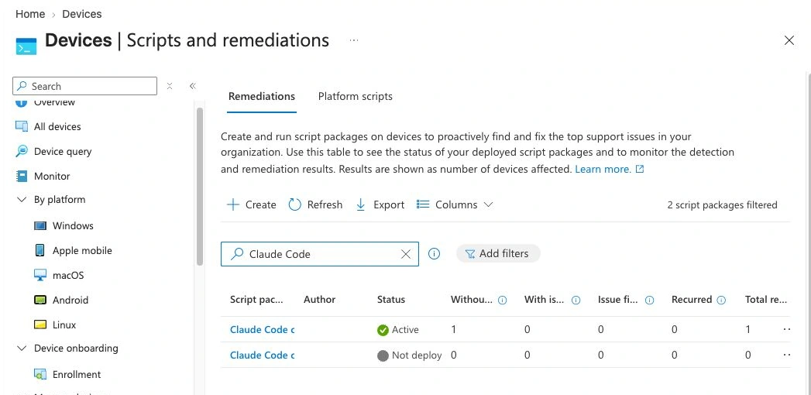
The one-hour package was already active. It contains detection and remediation scripts, runs in 64-bit PowerShell without the logged-on userâs credentials, and is assigned hourly to R&D Beta testers. AgentDomeâs screenshot selects Developer workstations. These are separate examples, not a verified synchronized assignment.
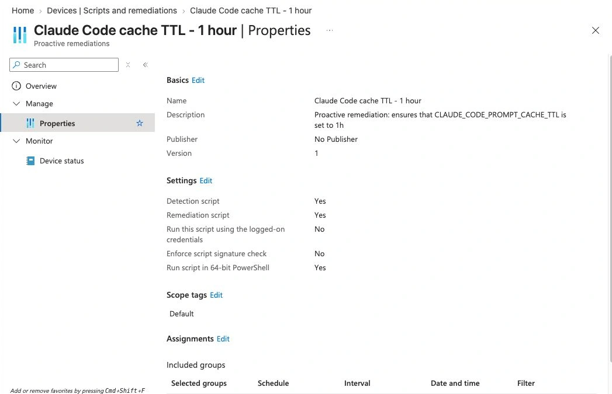
1. Detection checks the configured state
The existing detection script reads a machine-level environment variable named CLAUDE_CODE_PROMPT_CACHE_TTL and compares it with 1h. A matching value returns exit code 0; a missing or different value returns 1.
The relevant read operation is:
# Read-only inspection of the setting used by this demo package.
[Environment]::GetEnvironmentVariable(
"CLAUDE_CODE_PROMPT_CACHE_TTL",
"Machine"
)Microsoft documents that a remediation runs when detection returns exit 1. The package should therefore distinguish a real mismatch from a failed inspection. The exampleâs error handler also returns 1; I would review that behavior before using it beyond the demo. Intune Remediations
The existing remediation uses SetEnvironmentVariable at machine scope, reads the value back and broadcasts WM_SETTINGCHANGE. That establishes whether Windows stored the desired value. It does not establish whether an already running coding process has picked it up.
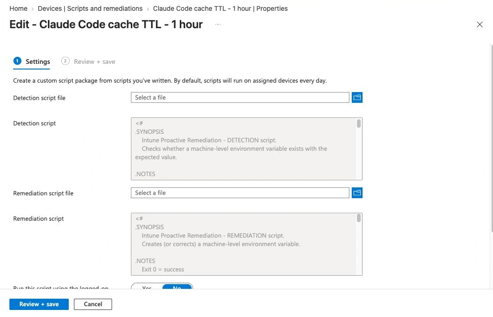
I read the scripts without saving changes. Their presence in Intune does not establish that AgentDome created them.
I could not find CLAUDE_CODE_PROMPT_CACHE_TTL in the public Claude Code environment-variable reference. Treat it as the setting used by this demo, not a verified recipe for other clients. Before copying it, confirm support for your client version and provider, then check what the running client sends. Claude Code environment variables
3. Read the device result precisely
The latest reported device row shows Without issues for detection and Not run for remediation.
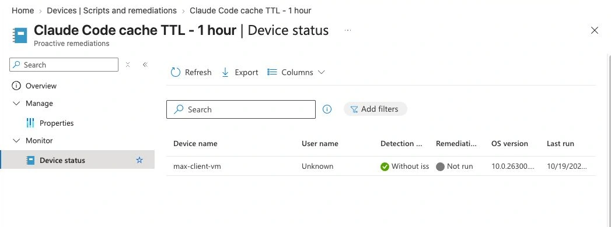
The detection passed at the last reported check. This does not show a new remediation run, a changed API request or reduced cost.
For a pilot, collect three separate results:
- Configuration: did the target device receive the intended value, without changing unrelated settings?
- Client behavior: does a fresh process use the supported configuration, and do request or usage records show the intended cache behavior?
- Work outcome: did comparable tasks cost less without extra failures, delays or manual correction?
Use Intune to check configuration and execution, AgentDome to review consumption, and the task owner to assess the answer or completed work.
Targeting and rollback
Machine scope affects users of that device. A per-developer recommendation therefore needs a deliberate mapping to user settings or device groups, especially on shared machines. A SYSTEM script must not accidentally inspect the SYSTEM accountâs user profile when it is meant to change a developerâs settings.
Save the previous value, including whether the variable was absent, and test restoring it. Running terminals may retain inherited environment values, so check the launch path developers use. A device that has not reported back stays pending.
Before deployment, confirm supported Windows enrollment, the Remediations license entitlement and the required Intune role. Do not treat a visible Create button as a license check. Prerequisites and permissions
Why a longer cache TTL can help, or waste money
A longer cache lifetime is worth considering when a developer returns to the same context after a pause. An agent sending unrelated prompts on each call has a different reuse pattern.
Anthropic documents a default five-minute cache lifetime and an optional one-hour lifetime with a higher cache-write cost. The longer option can help with reuse after five minutes; it is not a universal discount. Prompt caching
For a comparison, hold the task mix and model stable and measure cache creation, cache reads, uncached input and output. Check that the same prefix is actually eligible for reuse. Changing the prompt every time can defeat the intended optimization even if a setting has been deployed correctly.
I would compare cost per accepted completed task, including extra attempts and human corrections.
Budgets, packages and alerts
Budgets & Limits contains separate controls for departments, people and tools. The shared header shows the monthly budget, spend, utilization and active alerts.
Department defaults and reusable packages
The department view connects each departmentâs membership to a default package, monthly cap and current consumption. A default is useful for onboarding; exceptional workloads need a recorded reason and owner.
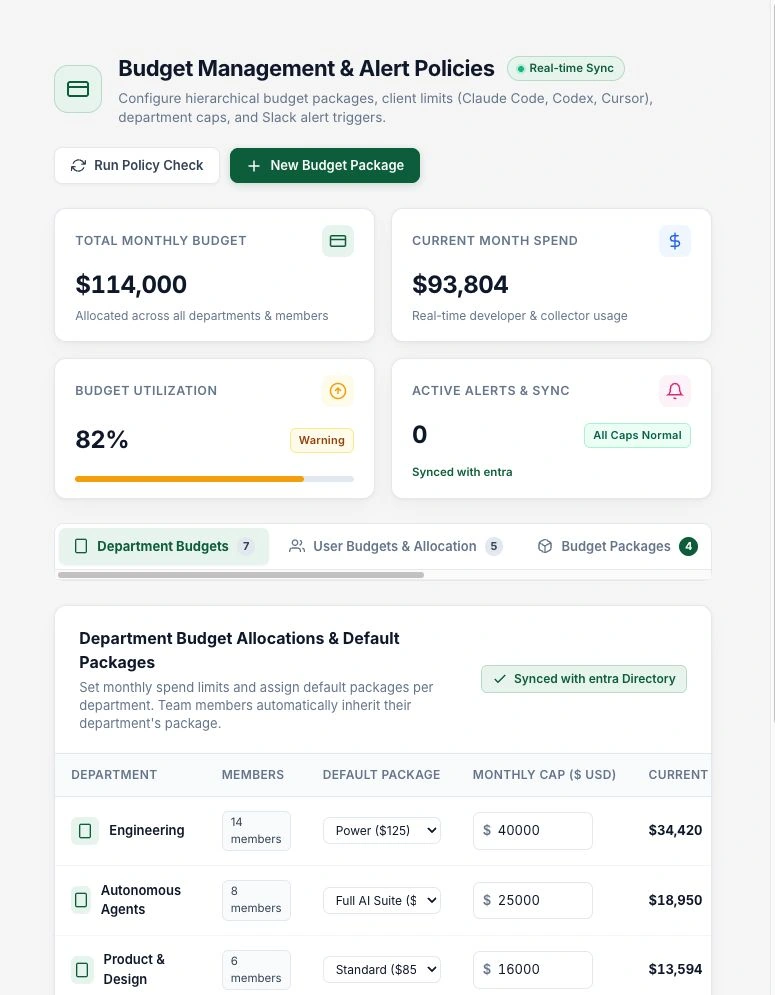
Budget Packages defines reusable allocations across tools. The displayed Standard, Pro and higher tiers are examples of internal allocations. They are not AgentDome product prices and should not be quoted as such.
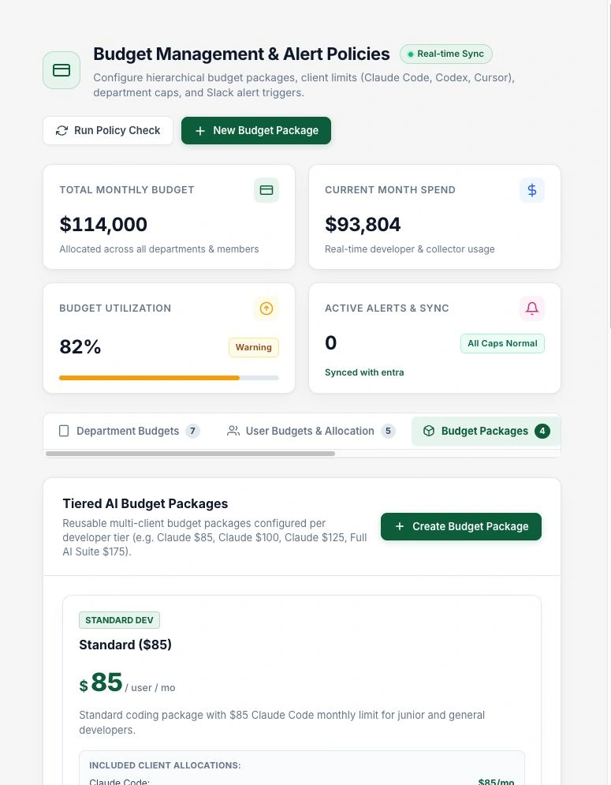
User overrides and client limits
User Budgets & Allocation lets you inspect inherited allocations, assign packages and make individual overrides. This avoids changing a whole departmentâs default to accommodate one workload, but requires periodic review of the exceptions.
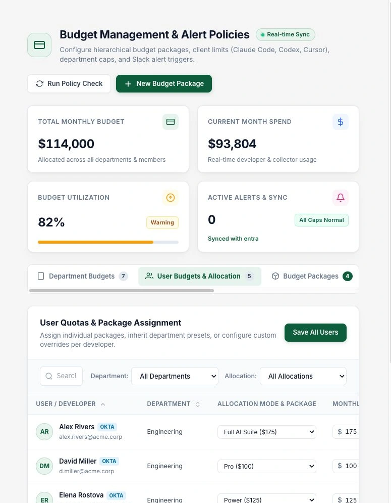
Client Tool Limits shows budgets for tools such as Claude Code, Codex and Cursor, with an option to add custom tools.
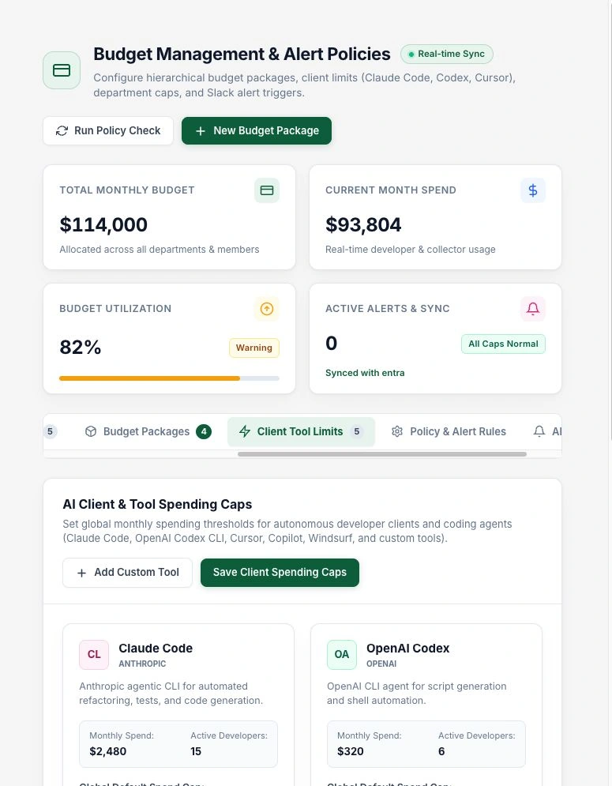
Notifications are not automatically a hard stop
Policy & Alert Rules includes warning and exceeded thresholds, cooldowns, channels and recipients. The visible description of Automated Spend Threshold Enforcement talks about continuous checks and Slack notifications.
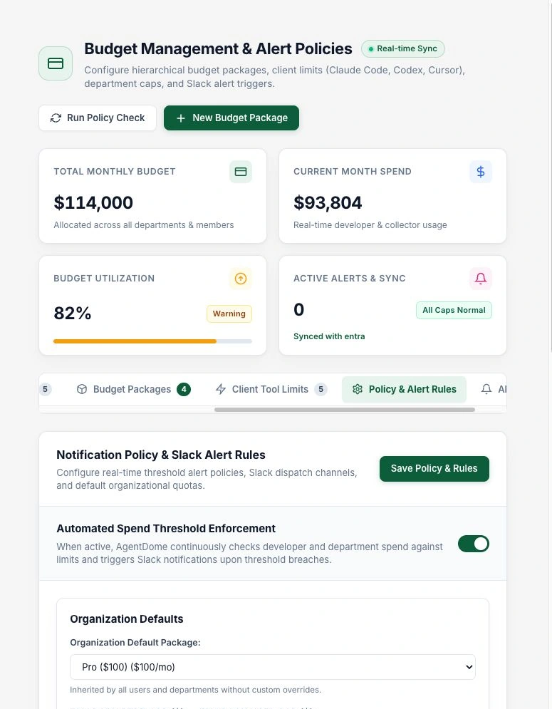
This screen does not establish that the next model request will be rejected at the budget limit. Check each integration: does it send a notification, change a client setting or enforce a provider-side cap? Also check the delay between usage ingestion and the policy check.
The Alert Feed had no active items in the staging example. I did not send a test notification. In a pilot, I would validate warning, exceeded, cooldown and recovery behavior with the people expected to receive the messages.
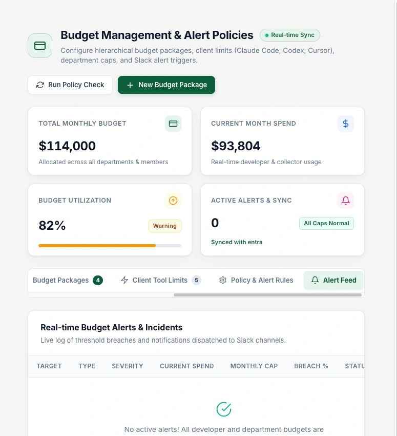
Ask a FinOps question, then inspect the result
The AI Chat provides suggested starting points for usage trends, heavy tasks, consumers, active tools and savings. I selected the savings question. It returned a short explanation and a table of candidate changes, with PDF, Excel and CSV actions.
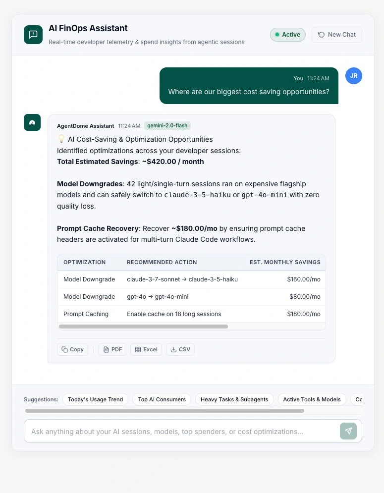
Take the answer to the corresponding recommendation and check its period and evaluation. The older model names in this demo response are not current model recommendations.
For each proposed change, record the workload, owner, evidence and next test. A phrase such as âzero quality lossâ needs supporting test results.
Compare savings against a baseline
Reporting has weekly and monthly views, a spend trend against a baseline, realized-savings summaries and applied recommendations. Categories include model rightsizing, caching, routing, MCP context pruning and budget limits. The table connects changes with their scope, date and reported effect.
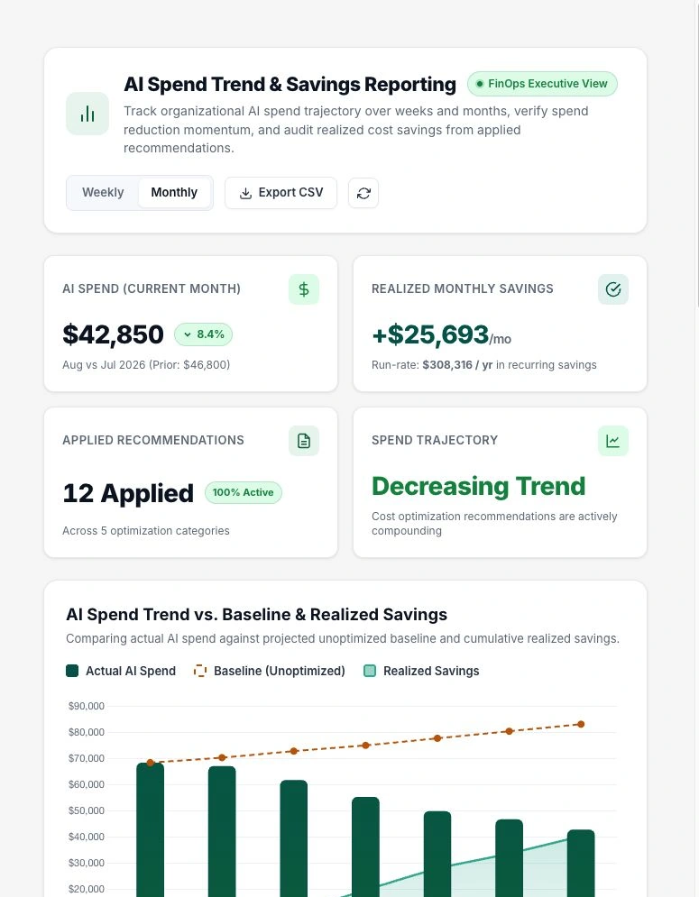
The detail of an applied caching recommendation includes before-and-after configuration, cache-hit information and quality labels. I would attach that record to the change ticket. The figures here are staging data.
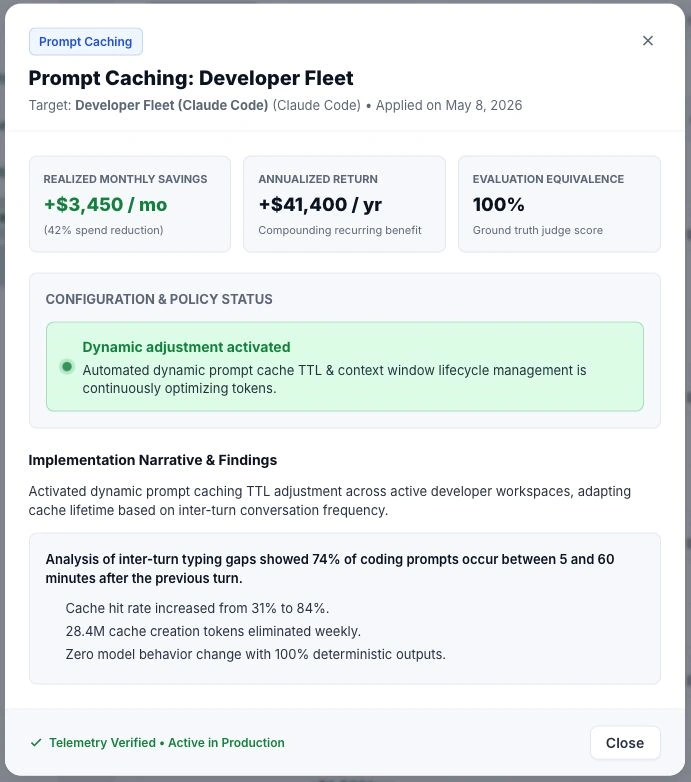
A quieter week can reduce cost without any optimization. More successful tasks can increase total cost while lowering unit cost. For an assessment, I would compare similar tasks over defined periods and include:
- Provider consumption and cache writes as well as reads.
- Accepted completions, retries and failed runs.
- Latency and human correction effort.
- Fixed licenses, platform fees and collector operation.
- The cost of implementing and maintaining the change.
Keep estimated, applied and measured separate in reports. A recommendationâs projected saving becomes a measured result only after the relevant usage and outcome data arrive.
Data sources, privacy and operating settings
The settings screen lists OpenAI, Anthropic, Cursor, Microsoft Foundry, AWS Bedrock, LiteLLM and Microsoft Copilot as connected in the demo. Identity sources include Okta and Microsoft Entra ID; Google Workspace is available but not connected in this session.
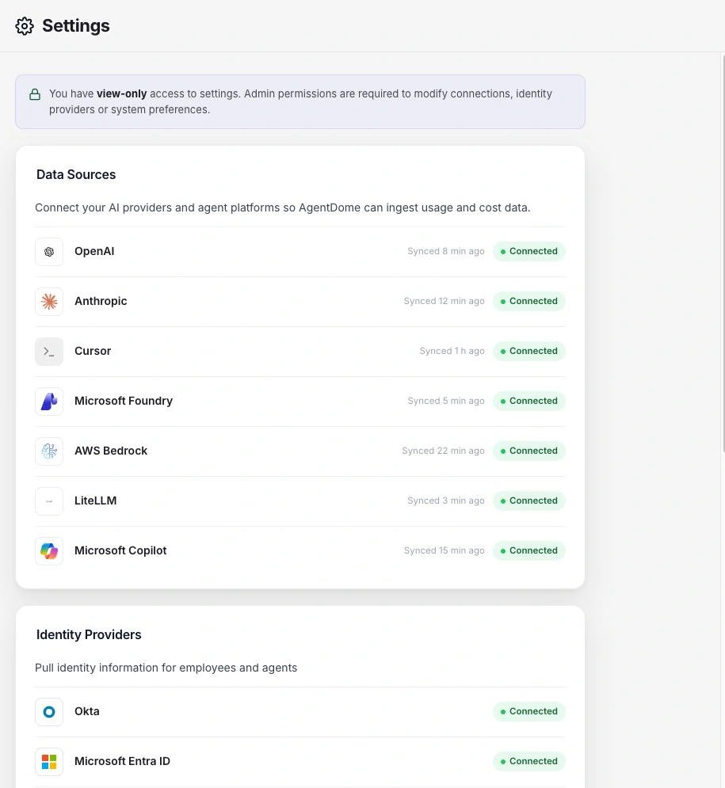
Other controls cover SSO, reporting currency, retention, recommendation aggressiveness, default caps and a weekly digest. This session had view-only access.
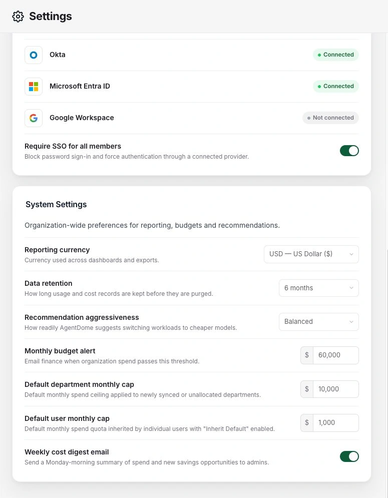
AgentDome describes local processing of sensitive content and onward transmission of required metadata. Ask for the field list and deployment diagram to confirm what stays local and what leaves the network. AgentDome security article
For Claude Code, OpenTelemetry can provide usage information; prompt-content collection has its own controls. Decide what is needed for attribution and optimization before enabling content collection. Claude Code monitoring
Check collector egress, data location, connector permissions, secret rotation, retention, deletion and access to individual usage. Review Intune write permissions separately from read-only access to the AI providers.
How I would run the first pilot
I would start with one coding client, one accountable team and one reversible change. That keeps the comparison understandable and gives developers a clear place to report a regression.
- Agree on the task. Select recurring work with an acceptance criterion, rather than measuring arbitrary chat activity.
- Establish attribution. Map identities, tools and billing records; investigate unattributed usage.
- Record a baseline. Capture representative task cost, completion, latency and correction effort.
- Review one recommendation. Confirm client support and evaluation results before choosing the target group.
- Prepare delivery and rollback. Review the script, execution context, previous values, schedule and exceptions.
- Apply to a test ring. Require device evidence and an effective-client check; do not count offline devices as successful.
- Compare and decide. Expand only if completed work is cheaper at an acceptable quality level. Otherwise restore the prior configuration and investigate.
Before adding the next group, review the finding, approved change, device result and later task cost with the workload owner.